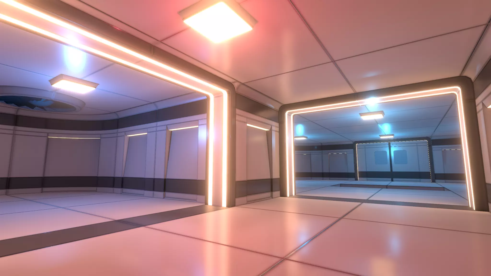

Our project will try to implement real-time ray tracing in the Unity engine to obtain a better understanding of how modern AAA games use it to render their graphics and scenes. If time permits, also look into implementing and understanding DLSS (Deep Learning Super Sampling) to further improve our basic real-time ray tracing engine.
Ray tracing is the process in which rays are cast from the camera’s lens to objects within a scene. From these intersections, we are then able to calculate the total illuminance of a particular point and convert this to the pixels we see on our screens. This process of tracing the path of our rays allows us to create realistic renderings of 3D virtual environments. However, the problem with normal ray tracing methods is that we are limited to images. What if we wanted to actually explore these virtual environments?
Therein lies our proposal. In this project, we want to implement real-time ray tracing, which allows us to physically move within our virtual, ray-traced environments. To implement this, we will be using the game engine Unity. Because real-time ray tracing is very CPU intensive, we will be incorporating optimizations such as rasterization and bounding volume hierarchies in order to smooth our run times.
How do AAA games do real-time ray tracing without losing a ton of frames, when our ray tracer in project 3 takes, like, 30 seconds to render a single image?
What are the problems that people face in implementing real-time ray tracing into said games? (ex. Lag, frame drops, performance hits) And how do we solve these problems?
How do we account for the viewport moving?
1. We will create an example scene using the 3D Free Modular Kit Asset library from Unity (see image below) and include additional assets in the scenes. The scenes will include multiple light sources of different colors and angles, and various reflective surfaces (variable reflectance and surface geometry), which demonstrate the effectiveness of ray-tracing when rendering the scene in terms of realism.
2. From here we'll be building on the basic ray tracing script from project 3 series to get a foundation. We will determine success in this part by first seeing proper reflections with no missing lighting and, if possible, less noise than what we saw in the project 3 series. Then, we will see if we can get comparable or better speed when rendering a still scene. Finally, we will look into implementing GPU acceleration for rendering (possibly use RTX cores)
3. Compare performance of basic ray tracing script with the existing Unity engine for ray-tracing. Evaluate based on render-time, detail, and noise to get real-time performance.
4. Implement a function to get the rendering engine to work in real-time with movement in the scene so that it simulates what one might see as they move around in the scene, which may entail some optimization requirements (requires GPU acceleration).
5. Once we get the real time tracing working we will try to optimize it once more to a point where it could be as suitable for gameplay as possible. Possible methods:
a. Caching background scenes and its rendered paths to reduce render time
b. Some sort of super-sampling technique to render to lower-resolution and upscale in real-time
c. Implementing Voxel Cone Tracing (VXGI) in place of Path-Tracing for continuous rendering
d. DLSS(potentially)
6.Compare performance of our real-time ray-tracing implementation with Unity’s real-time ray-tracing engine in terms of frames per second, and detail (occlusion, reflections, noise, etc.), and consistency of FPS. Possibly graph the FPS with the rendering detail (implement an existing industry-standard ray-tracing metric).
|

|
1. Implement some form of DLSS (Deep Learning Super Sampling). Using deep learning to super-sample ray-traced scene in real-time to increase rendered FPS
2. Implement an additional scene
Familiarity with Unity Engine, familiarity with how Unity Engine does ray tracing via documentation. Set up the scene to be rendered. Begin to port the ray tracing work we’ve done in Project 3 into Unity and begin converting it to something that can work in real-time (assuming real-time ray tracing can build on the basic ray-tracer we made in Project 3).
(Additionally, create a simple script that allows us to move the camera around the level: we can’t really feel the impact of real-time ray tracing if our camera never moves.)
Prepare for milestone 1: complete implementation to the best of our ability before milestone 1, optimize FPS as best as we can, bugfix, etc. Complete recording footage for milestone 1 by 4/25 or the weekend before the milestone (4/23 - 4/24).
If real-time ray tracing is somehow working bug-free and beautifully at this point, look into Unity’s DLSS package to further improve our performance. (See the Resources section for a link to the package.)
Allocate time for optimizations and bug fixes. If there is time, do “something fun” with the real-time ray tracer we’ve created, or look into adding additional scenes.
Unity Engine version 2021.2.19f1
Asset pack we’d use